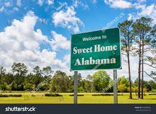

alabama 
History of Alabama
Earliest peoples
The present-day state of Alabama was originally inhabited by various Indigenous peoples. Visible traces of their occupancy, which spanned nearly 10,000 years, may be seen at Dust Cave, a Paleo-Indian site; at Russell Cave, a site dating to the Archaic period; and at Moundsville, a Mississippian site nestled in a series of large mounds that snake across the land. Many place-names in the state are of Native American origin, including the name Alabama itself, which derives from a word that perhaps means “thicket clearers.” The principal Indigenous groups at the time of the initial European exploration of the region were the Chickasaw, in the northwest; the Cherokee, in the northeastern uplands; the Upper Creek, or Muskogee, in the centre and southeast; and the Choctaw, in the southwest.
European rivalry, settlement, and growth
Hernando de Soto
Hernando de Soto
The first known European explorers were Spaniards, who arrived at Mobile Bay in 1519. The main thrust of exploration came in 1540, when Hernando de Soto and his army of about 500 men entered the interior from the valley of the Tennessee River to search for gold. His expedition, which crisscrossed the area extensively, included the first European sighting of the Mississippi River and added greatly to European knowledge of southern Indigenous cultures; it also opened the whole region to European settlement. A battle with the warriors of Choctaw chief Tuscaloosa, however, resulted in the slaughter of several thousand Native Americans in the area, one of the bloodiest single encounters between Europeans and Indigenous peoples in North America. De Soto ultimately found no gold, and the Spaniards who followed him failed to establish settlements in Alabama.
The ensuing 250 years were characterized by struggles among the French, British, and Spanish for control of the region, often in shifting alliances with the native peoples of the area. In 1702 the French founded the first permanent European settlement in Alabama, at Fort Louis, north of present-day Mobile. The British had also made a number of trips to the region from the Carolinas, but the French settlements—part of a string of forts arcing southward from Canada and designed to contain the British—were more numerous. Port Dauphin, on Dauphin Island, received the first Africans when a slave ship landed there in 1719.
The Treaty of Paris (1763) gave to Britain what was then the only settled part of Alabama, the Mobile area. In another Treaty of Paris (1783), which officially ended the American Revolution, Spain gained Mobile, and the new United States received the rest of the territory now constituting the state. Then, in 1813, the United States, claiming Mobile as a part of the Louisiana Purchase of 1803, drove the Spanish out of the area and established authority throughout the state. In the meantime, the Cherokee, Chickasaw, and Choctaw had ceded some land by 1806. In 1814 Gen. Andrew Jackson inflicted a decisive defeat on the Creek at the Battle of Horseshoe Bend. The subsequent influx of white settlers and the institution of the cotton economy caused a rapid removal of the Native Americans to the west. The Creek cession of 1832 virtually ended the claims of Indigenous peoples to territorial rights in Alabama. Although a small number of Creeks remain in the southern part of the state, most descendants of Alabama’s original inhabitants live in Oklahoma.
The antebellum period
Alabama was established as a separate territory in 1817 and became a state in 1819. By 1820 Alabama’s population was more than 125,000, including about 500 free Blacks. By 1830 there were 300,000 residents, nearly one-fifth of them enslaved, and cotton was the principal cash crop. Until the Civil War, domestic politics centred on land policy, the banking system, the question of slavery, and the removal of Indigenous peoples. The state suffered severely for almost a decade in the economic depression that followed the panic of 1837 financial crisis. During the late 1840s and ’50s many efforts were made to create a more industrialized economy. Railroads, cotton manufacturing, and some mining were begun, though such efforts often suffered from a shortage of capital. The vast majority of investment remained in cotton and enslaved people. By 1860 the population was approaching one million; roughly half of the people were Black, and all but 5 percent of the state’s population was rural.
The Civil War and its aftermath
Montgomery, Alabama: Commercial Street, 1860s
Montgomery, Alabama: Commercial Street, 1860s
In 1861 Alabama seceded from the Union and joined the Confederate States of America, which established its first capital in Montgomery. The state legislature conscripted soldiers and appropriated several million dollars for military operations and for the support of the families of soldiers. Some 35,000 of the 122,000 Alabamians who served in the war died. Following the collapse of the Confederacy and the refusal of the state legislature to ratify the Fourteenth Amendment to the U.S. Constitution (that granted citizenship to people who had formerly been enslaved), Alabama was placed under military rule in 1867. The next year the state ratified a new constitution that protected the civil rights of Black citizens, and Alabama was readmitted to the Union.
From 1868 to 1874 the state was in political turmoil. To many white Alabamians the Reconstruction period was tragic, but to most Black Alabamians it was a period of opportunity and hope. The Huntsville Advocate asserted, “This is a white man’s government and a white man’s state,” and the Ku Klux Klan used terror to enforce that view. Among white Alabamians, a struggle ensued between those who defied the notion of Black people having political rights and power and those willing to cooperate with the Black community and its Northern allies. Black Alabamians demanded access to education and were given it, but most of the white majority insisted that schools be racially separate. Although the Black contingent participated in the constitutional conventions and in the state legislatures, its political power was not as strong as that of its counterparts in South Carolina, Mississippi, and Louisiana. In 1874 the white Democrats of Alabama, most of whom had been supporters of the Confederacy, regained control of the state political machinery. Black Alabamians were rendered almost powerless until the civil rights movement of the 1960s. Throughout the period, however, some Black citizens worked diligently to stimulate political activity, to enlighten and influence the white community, and to encourage the state and federal governments to guarantee political and social rights to those of African ancestry.
In 1875 a state constitutional convention was held, and a new conservative constitution was ratified. Subsequent conservative political efforts centred on restricting Black participation in government, reducing expenditures and state services, and fostering the expansion of railroads and industry. By 1901, when another state constitution was ratified—this one disenfranchising the Black population—there was virtually no African American participation in government, and a tide of social and political reaction was in full flood.
The economy recovered slowly from the devastation of the war. Sharecropping as a system of land tenure and labour relations emerged, and with it came an even greater dependence on a single crop: cotton. Depressed agricultural conditions fanned a populist revolt among small farmers in the 1890s. After 15 years of delay because of depression and capital shortages, cotton manufacturing and pig-iron production began to grow steadily in the state from about 1880. Despite a long interruption brought about by the depression of the 1890s, Alabama had by the turn of the 20th century become one of the more highly industrialized Southern states.
Since 1900
In 1900 Alabama was still largely rural. The onset of the boll weevil blight in 1915 seriously damaged its one-crop agriculture, forcing a diversification of the rural economy. Rural dwellers, mostly poor and Black, embarked on the Great Migration, an exodus to Southern cities and to the North, where cheap foreign labour supplies had dried up during World War I. A factor in encouraging the out-migration of Black Alabamians was the pattern of racial segregation under the Jim Crow system, which was enforced legally and extralegally. The proportion of Blacks in the state’s population began a slow decline, which reduced their numbers to less than one-third of the total population by mid-century.
Great Depression: miners in Alabama
Great Depression: miners in Alabama
Childersburg, Alabama: main street, 1930s
Childersburg, Alabama: main street, 1930s
The Great Depression of the 1930s made suffering virtually universal in the state. Many thousands of tenant farmers lost their credit when the price of cotton fell to its lowest point. Birmingham’s industrial economy almost came to a standstill. Federal relief programs alleviated some problems, and the Tennessee Valley Authority created new economic activity in northern Alabama.
The buildup of military spending in the state lifted the Alabama economy out of depression in the World War II years. Statewide, the war did more to encourage industrialization than any other historical factor. After the war the contributions of the federal government in support of agriculture and national defense, including the space program, and the provision of such services as road building, education, and welfare, helped to transform the state’s economy. The mechanization of agriculture in the 1940s and ’50s completed the revolution in the state’s agricultural economy.
civil rights movement
civil rights movement
Selma March
Selma March
Racial segregation nevertheless continued to give rigidity to the social framework of Alabama and effectively excluded the Black population from political and economic power. The 1954 U.S. Supreme Court Brown v. Board of Education decision declaring segregation in public education unconstitutional encouraged Black Alabamians to work to improve race relations. Progress was nevertheless slow and bitter. The state acquired international significance as the site of such noteworthy civil rights actions as the bus boycott of 1955–56 in Montgomery, which introduced Martin Luther King, Jr., to the country; the Freedom Rides of 1961; street demonstrations in Birmingham in 1963 in which commissioner of public safety Eugene (“Bull”) Connor turned fire hoses and police dogs on Black protesters; Gov. George C. Wallace’s defiant attempt to stop the desegregation of the state university that same year; the death of four Black children in an explosion that destroyed their Birmingham Sunday school, also in 1963; and the march from Selma to Montgomery in 1965.
This period of Black activism precipitated major revisions in U.S. federal law. The Civil Rights Act of 1964 finally ended segregation in public accommodations and provided protection against some forms of employment discrimination. The Voting Rights Act of 1965 outlawed most means of limiting the political rights of Blacks.
As a result of these activities, African American citizens attained better access to public services, broader educational and economic opportunities, and freer political participation. By the early 21st century the proportion of registered Black voters had increased dramatically, and African Americans have been elected in increasing numbers to state and local government positions. Job opportunities in some professions and in government have improved markedly for African Americans, though poverty in the state is still disproportionately high in Black communities. Many professional and civic bodies and most schools have achieved a good measure of integration. Progress has been sometimes slow and incomplete but nevertheless significant. Symbolic of changing attitudes was, in 2007, Alabama’s becoming the fourth state to apologize officially for its role in the institution of slavery.
Charles Goode Gomillion
Robert J. Norrell.